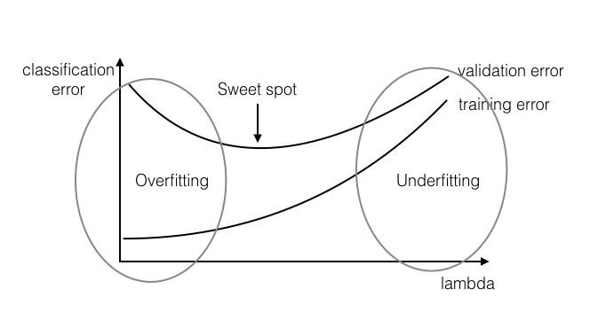
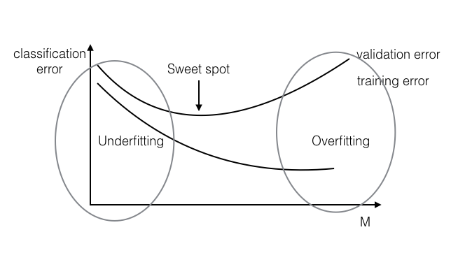
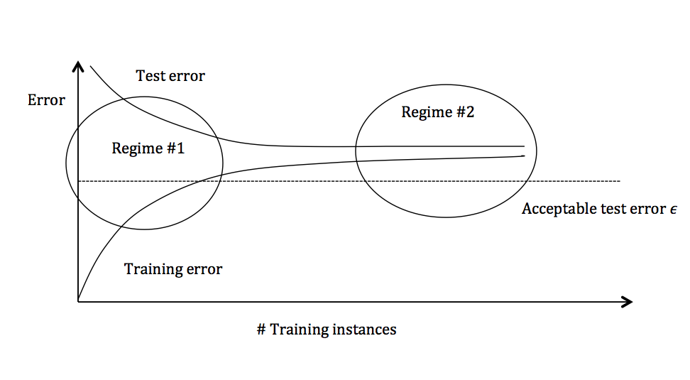

Underfitting: The classifier learned on the training set is not expressive enough to even account for the data provided. In this case, both the training error and the test error will be high, as the classifier does not account for relevant information present in the training set.
Overfitting: The classifier learned on the training set is too specific, and cannot be used to accurately infer anything about unseen data. Although training error continues to decrease over time, test error will begin to increase again as the classifier begins to make decisions based on patterns which exist only in the training set and not in the broader distribution.
 Figure 1: overfitting and underfitting
Divide data into training and validation portions. Train your algorithm on the "training" split and evaluate it on the "validation" split, for various value of $\lambda$ (Typical values: 10-5 10-4 10-3 10-2 10-1 100 101 102 ...).
k-fold cross validationDivide your training data into $k$ partitions. Train on $k-1$ of them and leave one out as validation set. Do this $k$ times (i.e. leave out every partition exactly once) and average the validation error across runs. This gives you a good estimate of the validation error (even with standard deviation). In the extreme case, you can have $k=n$, i.e. you only leave a single data point out (this is often referred to as LOOCV- Leave One Out Cross Validation). LOOCV is important if your data set is small and cannot afford to leave out many data points for evaluation .
Telescopic searchDo two searches: 1st, find the best order of magnitude for $\lambda$; 2nd, do a more fine-grained search around the best $\lambda$ found so far. For example, first you try $\lambda=0.01,0.1,1,10,100$. It turns out 10 is the best performing value. Then you try out $\lambda=5,10,15,20,25,...,95$ to test values "around" $10$.
Stop your optimization after M (>= 0) number of gradient steps, even if optimization has not converged yet.
 Figure 2: Early stopping
What if even your "sweet spot" validation error is still too high?
The graph above plots the training error and the test error and can be divided into two overarching regimes. In the first regime (on the left side of the graph), training error is below the desired error threshold (denoted by $\epsilon$), but test error is significantly higher. In the second regime (on the right side of the graph), test error is remarkably close to training error, but both are above the desired tolerance of $\epsilon$. Figure 3: Test and training error as the number of training instances increases.
In the first regime, the cause of the poor performance is high variance.
Symptoms:
Remedies:
Symptoms:
Remedies: